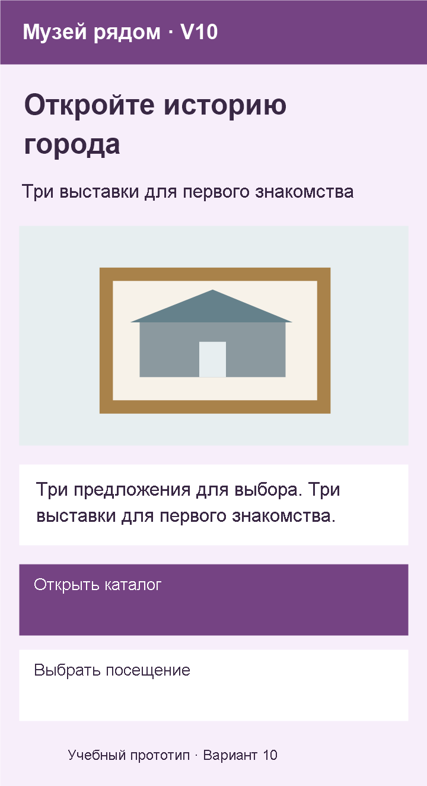
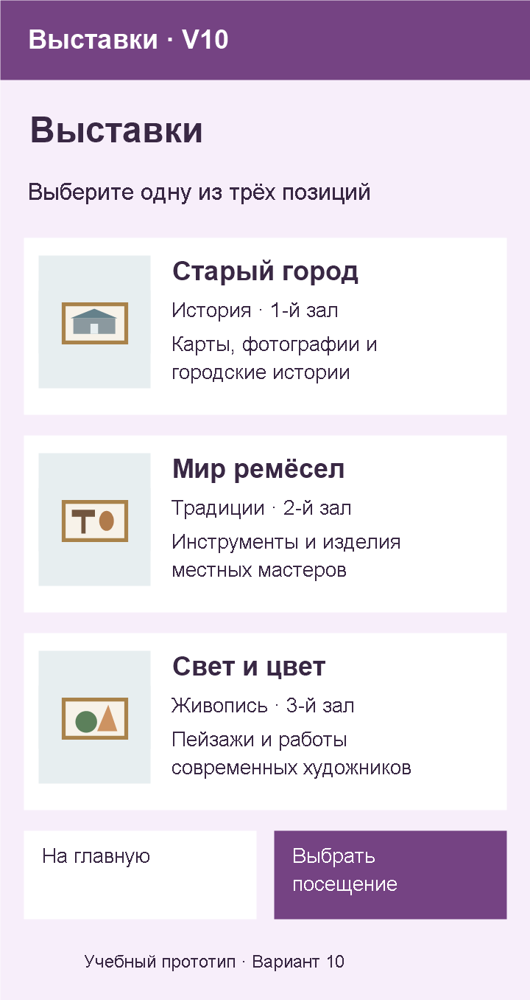
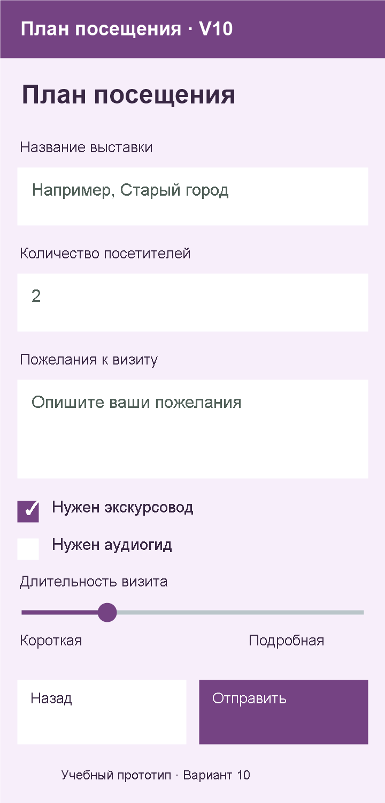
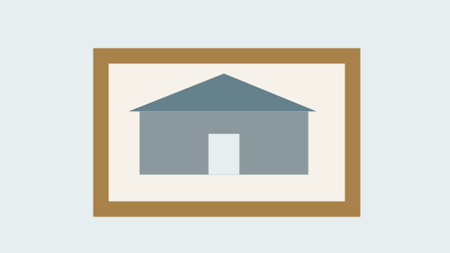

Вариант 10 — Музей рядом
Создайте в MIT App Inventor проект Variant10. Название приложения — «Музей рядом · V10». Используйте только номер варианта, без фамилии.
Это одно задание на две пары. На паре 6 соберите главный экран и каталог. На паре 7 завершите форму, подключите пять переходов и проверьте проект.
Макеты экранов
На сайте переключайте макеты названиями экранов. В Obsidian они расположены друг под другом. Системные поля и кнопки App Inventor могут выглядеть немного иначе; соблюдать нужно структуру и свойства из задания.



Общие требования
- Ровно три экрана:
Screen1,ExhibitionsScreen,VisitScreen. УстановитеScrollable: true; для длинного каталога или формы прокрутка допустима. - Свойство
Title: уScreen1— «Музей рядом · V10», уExhibitionsScreen— «Выставки · V10», уVisitScreen— «План посещения · V10». - Фон —
#F7EEFA, текст —#392844. Основные кнопки —#754383с текстом#FFFFFF. - Второстепенные кнопки, поля и блоки каталога — белые с основным цветом текста.
- Заголовки:
FontSize: 24,FontBold: true; названия позиций:18, полужирные; обычный текст:14–16. - Корневой
VerticalArrangementзанимает всю ширину:Width: Fill parent. Горизонтальные строки собирайте вHorizontalArrangement. - Изображения сохраняют пропорции. Используйте иллюстрации в конце листа либо свои по тем же сюжетам.
- На каждом экране подпись «Учебный прототип · Вариант 10».
- Имена компонентов — английские, по таблицам; надписи для пользователя — русские.
- Нет перекрытий и обрезанных надписей. Расчёты, обработка формы и сохранение данных не требуются.
Первая пара: главный экран и каталог
Screen1
Расположение: Заголовок и пояснение → широкое изображение → описание → две кнопки друг под другом.
| Компонент | Имя | Текст или содержание |
|---|---|---|
Label |
LabelTitle |
Откройте историю города |
Label |
LabelSubtitle |
Три выставки для первого знакомства |
Image |
ImageCover |
Иллюстрация первой позиции каталога |
Label |
LabelIntro |
Три предложения для выбора. Три выставки для первого знакомства. |
Button |
ButtonCatalog |
Открыть каталог |
Button |
ButtonForm |
Выбрать посещение |
Label |
LabelVariant |
Учебный прототип · Вариант 10 |
ButtonCatalog — основная, ButtonForm — второстепенная. Контейнеры назовите VerticalArrangementMain, HorizontalArrangementHero (если изображение рядом с текстом), HorizontalArrangementActions (если кнопки рядом).
ExhibitionsScreen
LabelCatalogTitle — «Выставки»; LabelCatalogIntro — «Выберите одну из трёх позиций».
Расположение: В каждой строке изображение слева, три надписи справа.
| Позиция | Название | Характеристика | Описание | Компонент изображения |
|---|---|---|---|---|
| 1 | Старый город | История · 1-й зал | Карты, фотографии и городские истории | ImageItem1 |
| 2 | Мир ремёсел | Традиции · 2-й зал | Инструменты и изделия местных мастеров | ImageItem2 |
| 3 | Свет и цвет | Живопись · 3-й зал | Пейзажи и работы современных художников | ImageItem3 |
В каждой позиции три Label: LabelItem1Name, LabelItem1Info, LabelItem1Description. Для позиций 2 и 3 замените цифру. Контейнеры — HorizontalArrangementItem1–3 для изображения сбоку или VerticalArrangementItem1–3 для изображения сверху. Группы надписей — VerticalArrangementText1–3.
Внизу рядом разместите ButtonCatalogBack — «На главную» (второстепенная) и ButtonCatalogForm — «Выбрать посещение» (основная). Под ними LabelCatalogVariant с номером варианта.
Промежуточная сдача: покажите главный экран, каталог и дерево Components; сохраните проект с созданным третьим экраном.
Вторая пара: форма и общая навигация
VisitScreen
LabelFormTitle — «План посещения».
Расположение: Поля 1, 2, 3 → два флажка → ползунок. Кнопки внизу рядом.
Три поля в порядке сверху вниз:
| Номер поля | Подпись и поле | Текст подписи | Свойства поля |
|---|---|---|---|
| 1 | LabelItemPrompt + TextBoxItem |
Название выставки | Hint: Например, Старый город |
| 2 | LabelCountPrompt + TextBoxCount |
Количество посетителей | Text: 2; NumbersOnly: true |
| 3 | LabelCommentPrompt + TextBoxComment |
Пожелания к визиту | Hint: Опишите ваши пожелания; MultiLine: true |
Каждое поле имеет отдельную видимую подпись. Многострочное поле высотой не менее двух строк; поля занимают ширину контейнера.
Остальные элементы:
| Компонент | Имя | Текст или свойства |
|---|---|---|
CheckBox |
CheckBoxOption1 |
Нужен экскурсовод; отмечен |
CheckBox |
CheckBoxOption2 |
Нужен аудиогид; не отмечен |
Label |
LabelSliderPrompt |
Длительность визита |
Slider |
SliderLevel |
MinValue: 1; MaxValue: 5; ThumbPosition: 2 |
Два Label |
LabelSliderMin, LabelSliderMax |
Короткая; Подробная |
Button |
ButtonFormBack |
Назад — второстепенная |
Button |
ButtonSubmit |
Отправить — основная |
Label |
LabelFormVariant |
Учебный прототип · Вариант 10 |
Подписи ползунка стоят рядом в HorizontalArrangementSliderLabels. Его положение демонстрационное; вычисления и вывод значения в надпись не нужны. ButtonSubmit остаётся визуальным элементом, без обработчика отправки.
Подключите пять переходов
| Экран | Событие кнопки | Блок из Control |
|---|---|---|
Screen1 |
ButtonCatalog.Click |
open another screen → ExhibitionsScreen |
Screen1 |
ButtonForm.Click |
open another screen → VisitScreen |
ExhibitionsScreen |
ButtonCatalogForm.Click |
open another screen → VisitScreen |
ExhibitionsScreen |
ButtonCatalogBack.Click |
close screen |
VisitScreen |
ButtonFormBack.Click |
close screen |
Как соединить блоки: общая инструкция седьмой пары. Для возврата закрывайте дополнительный экран; новый Screen1 не открывайте. Передача данных между экранами не нужна.
Проверка и сдача
- Проверьте маршрут: главная → каталог → форма → назад в каталог → назад на главную.
- Проверьте маршрут: главная → форма → назад на главную.
- Повторите оба маршрута трижды. Форма возвращается туда, откуда была открыта.
- Сверьте расположение изображений, порядок позиций и полей, цвета и начальные состояния элементов со своим вариантом.
- Сдайте
Variant10.aiaи три снимка экранов. При показе найдите заданный преподавателем компонент, измените его свойство и объясните назначение.
Изображения для работы
Сохраните иллюстрации и загрузите в Media проекта. Первую используйте также в ImageCover. Собственные изображения по тем же сюжетам допустимы; расположение компонентов должно сохраниться.



Вернуться к первой паре или второй паре.